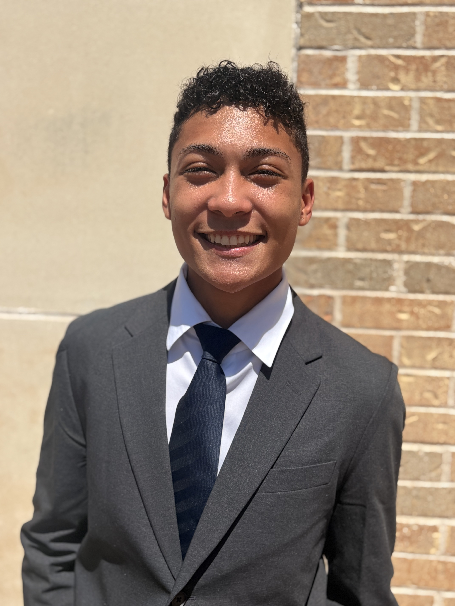

01
Software Engineering & AI
I work with Python, Java, TypeScript, React, FastAPI, and PostgreSQL. I’m especially interested in full-stack development, AI-powered applications, and scalable software systems.
ECE at UT Austin
I’m Sydnie Hall, an Electrical and Computer Engineering student specializing in Software Engineering and Design.
Explore what I work on
About
I’m passionate about building technology that solves real-world problems, exploring the intersection of technology and business, and using my skills to make a positive impact.
Current focus
01
I work with Python, Java, TypeScript, React, FastAPI, and PostgreSQL. I’m especially interested in full-stack development, AI-powered applications, and scalable software systems.
02
I enjoy turning ideas into practical products that simplify everyday challenges, with a growing interest in startups, business strategy, and thoughtful product decisions.
03
I bring experience in student leadership, teaching, and mentoring. Outside of technology, music production and DJing give me another way to experiment, connect, and create.
Selected project
A full-stack product designed to make a complicated job search easier to organize. It reflects the kind of work I enjoy most: useful systems, clear interfaces, and purposeful engineering.